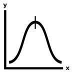

Prev - #14 Average | Table of Contents | Next - #16 Mode
median([3, 7, 10, 4, 1, 6, 9, 2, 8]) → 6

If you put a list of numbers into sorted order, the median number is the number at the halfway point. Outliers can cause the statistical average to be much higher or smaller than the majority of numbers, so that the median number may give you a better idea of the characteristics of the numbers in the list. This, the previous, and the next exercise challenge you to make Python solve these statistics calculations.
Exercise Description
Write a median() function that has a numbers parameter. This function returns the statistical
median of the numbers list. The median of an
odd-length list is the number in the middlemost number when the list is in
sorted order. If the list has an even length, the median is the average of the
two middlemost numbers when the list is in sorted order. Feel free to use
Python’s built-in sort() method to sort the numbers list.
Passing an empty list to average()
should cause it to return None.
These Python assert statements stop
the program if their condition is False. Copy them
to the bottom of your solution program. Your solution is correct if the following
assert statements’ conditions are all True:
assert median([]) == None
assert median([1, 2, 3]) == 2
assert median([3, 7, 10, 4, 1, 9, 6, 5, 2, 8]) == 5.5
assert median([3, 7, 10, 4, 1, 9, 6, 2, 8]) == 6
import random
random.seed(42)
testData = [3, 7, 10, 4, 1, 9, 6, 2, 8]
for i in range(1000):
random.shuffle(testData)
assert median(testData) == 6
Shuffling the order of the numbers should not affect the median.
The for loop does 1,000 such random shuffles to
thoroughly check that this fact remains true. For an explanation of the random.seed() function, see the Further
Reading section of Exercise #19, “Password Generator”.
Try to write a solution based on the information in this description. If you still have trouble solving this exercise, read the Solution Design and Special Cases and Gotchas sections for additional hints.
Prerequisite concepts: len(), for loops, augmented assignment operators, integer
division, modulo operator, indexes
Solution Design
First, check if the numbers list is
empty and, if so, return None. Next, you must sort
them by calling the sort() list method. Then
calculate the middle index by integer dividing the list length by 2. Integer division does normal division and then rounds the
result down to the next lowest integer. Python’s integer division operator is //. So, for example, while the expression 5 / 2 evaluates to 2.5, the
expression 5 // 2 evaluates to 2.
Next, figure out if the list length is odd or even. If odd, the median number is at the middle index. Let’s think about a few examples to make sure this is correct:
·
If the list length is 3, the indexes
range from 0 to 2 and the
middle index is
3 // 2 or 1. And 1 is the middle of 0 to 2.
·
If the list length is 5, the indexes range
from 0 to 4 and the
middle index is
5 // 2 or 2. And 2 is the middle of 0 to 4.
·
If the list length is 9, the indexes
range from 0 to 8 and the
middle index is
9 // 2 or 4. And 4 is the middle of 0 to 8.
These seem correct. If the list length is even, we need to calculate the average of the two middle numbers. The indexes for these are the middle index and the middle index minus 1. Let’s think about a few examples to make sure this is correct:
·
If the list length is 4, the indexes
range from 0 to 3 and the
middle indexes are
4 // 2 and 4 // 2 - 1, or
2 and 1. And 2 and 1 are the middle of 0 to 3.
·
If the list length is 6, the indexes
range from 0 to 5 and the
middle indexes are
6 // 2 and 6 // 2 - 1, or
3 and 2. And 3 and 2 are the middle of 0 to 5.
·
If the list length is 10, the indexes
range from 0 to 9 and the
middle indexes are 10 // 2 and 10
// 2 - 1, or 5 and 4.
And 5 and 4 are the
middle of 0 to 9.
These seem correct too. Even-length lists have the additional step that the median is the average of two numbers, so add them together and divide by two.
Special Cases and Gotchas
If the numbers parameter is an empty
list, the function should return None. Therefore, you
should put the code that checks this at the start of the function.
Now try to write a solution based on the information in the previous sections. If you still have trouble solving this exercise, read the Solution Template section for additional hints.
Solution Template
Try to first write a solution from scratch. But if you have difficulty, you can use the following partial program as a starting place. Copy the following code from https://invpy.com/median-template.py and paste it into your code editor. Replace the underscores with code to make a working program:
def median(numbers):
# Special case: If the numbers list is empty, return None:
if len(numbers) == ____:
return ____
# Sort the numbers list:
____.sort()
# Get the index of the middle number:
middleIndex = len(____) // ____
# If the numbers list has an even length, return the average of the
# middle two numbers:
if len(numbers) % ____ == 0:
return (numbers[____] + numbers[middleIndex - ____]) / ____
# If the numbers list has an odd length, return the middlemost number:
else:
return numbers[____]
The complete solution for this exercise is given in Appendix A and https://invpy.com/median.py. You can view each step of this program as it runs under a debugger at https://invpy.com/median-debug/.